[1] "checking_status" "duration"
[3] "credit_history" "credit_amount"
[5] "savings" "employment"
[7] "installment_rate" "personal_status_sex"
[9] "other_debtors" "residence_since"
[11] "property" "age"
[13] "other_installment_plans" "housing"
[15] "existing_credits" "job"
[17] "people_liable" "telephone"
[19] "foreign_worker" "default"
[21] "purpose_grouped" Solución Taller 2: Construcción de clasificador
Universidad del Valle
Facultad de Ingeniería
Machine Learning para Gestión Financiera
Profesor: Iván Mauricio Bermúdez Vera
1 Introducción
La predicción del comportamiento crediticio de los clientes resulta fundamental para las entidades prestadoras de dinero dado que pueden exponerse a un posible riesgo de impago que finalmente repercuta negativamente en el rendimiento económico de la institución. Considerando lo anterior, es necesario establecer modelos de clasificación que permitan generar una aproximación empírica sobre las características de los clientes que pueden ser relevantes para un posible impago. Así, a continuación se presenta la construcción y análisis de tres modelos clasificadores que permiten predecir el comportamiento crediticio de los clientes, considerando la variable respuesta default como la variable de interés. Los modelos a evaluar son: regresión logística, árbol de decisión y random forest.
2 Carga de datos
El conjunto de datos German Credit presenta información sobre 1000 solicitantes de crédito. Cada variable en el conjunto permite una aproximación a las características financieras y socioeconómicas del potencial cliente a su vez que permite construir un análisis de estas variables con respecto a su comportamiento crediticio. Previamente, el dataset fue procesado y limpiado para su posterior uso en la construcción de los clasificadores.
Revisión del conjunto de datos
'data.frame': 1000 obs. of 21 variables:
$ checking_status : chr "less_0" "0_200" "no_account" "less_0" ...
$ duration : int 6 48 12 42 24 36 24 36 12 30 ...
$ credit_history : chr "critical_other" "existing_paid" "critical_other" "existing_paid" ...
$ credit_amount : int 1169 5951 2096 7882 4870 9055 2835 6948 3059 5234 ...
$ savings : chr "unknown" "less_100" "less_100" "less_100" ...
$ employment : chr "greater_7" "1_4" "4_7" "4_7" ...
$ installment_rate : int 4 2 2 2 3 2 3 2 2 4 ...
$ personal_status_sex : chr "male_single" "female_divorced_separated_married" "male_single" "male_single" ...
$ other_debtors : chr "none" "none" "none" "guarantor" ...
$ residence_since : int 4 2 3 4 4 4 4 2 4 2 ...
$ property : chr "real_estate" "real_estate" "real_estate" "building_society_savings_life_insurance" ...
$ age : int 67 22 49 45 53 35 53 35 61 28 ...
$ other_installment_plans: chr "none" "none" "none" "none" ...
$ housing : chr "own" "own" "own" "for_free" ...
$ existing_credits : int 2 1 1 1 2 1 1 1 1 2 ...
$ job : chr "skilled_official" "skilled_official" "unskilled_resident" "skilled_official" ...
$ people_liable : int 1 1 2 2 2 2 1 1 1 1 ...
$ telephone : chr "yes" "none" "none" "none" ...
$ foreign_worker : chr "yes" "yes" "yes" "yes" ...
$ default : chr "good" "bad" "good" "good" ...
$ purpose_grouped : chr "Home" "Home" "Investment/Development" "Home" ...El cojunto de datos tratado se encuentra compuesto por 21 variables de las cuales 1 de ellas es la variable respuesta default y 20 posibles variables explicativas. De estas 20 variables, 13 deben adaptarse a un formato tipo factor para denotar adecuadamente sus categóricas y 7 son numéricas.
División en train y test
El conjunto de datos se divide en 80% train y 20% test, siendo estas particiones las usualmente utilizadas en problemas de clasificación. La división se realiza de manera estratificada para asegurar que la proporción de clases se mantenga en ambos conjuntos. Así, 800 de los datos permiten establecer el entrenamiento de los modelos y 200 datos permiten evaluar el desempeño de los clasificadores.
[1] 800[1] 200Preparación de variables
Se hace la conversión a factores para las variables default, checking_status, credit_history, savings, employment, personal_status_sex, other_debtors, property, other_installment_plans housing, job, telephone, foreign_worker, purpose_grouped
'data.frame': 1000 obs. of 21 variables:
$ checking_status : Factor w/ 4 levels "0_200","greater_200",..: 3 1 4 3 3 4 4 1 4 1 ...
$ duration : int 6 48 12 42 24 36 24 36 12 30 ...
$ credit_history : Factor w/ 5 levels "all_paid","critical_other",..: 2 4 2 4 3 4 4 4 4 2 ...
$ credit_amount : int 1169 5951 2096 7882 4870 9055 2835 6948 3059 5234 ...
$ savings : Factor w/ 5 levels "100_500","500_1000",..: 5 4 4 4 4 5 2 4 3 4 ...
$ employment : Factor w/ 5 levels "1_4","4_7","greater_7",..: 3 1 2 2 1 1 3 1 2 5 ...
$ installment_rate : int 4 2 2 2 3 2 3 2 2 4 ...
$ personal_status_sex : Factor w/ 4 levels "female_divorced_separated_married",..: 4 1 4 4 4 4 4 4 2 3 ...
$ other_debtors : Factor w/ 3 levels "co_applicant",..: 3 3 3 2 3 3 3 3 3 3 ...
$ residence_since : int 4 2 3 4 4 4 4 2 4 2 ...
$ property : Factor w/ 4 levels "building_society_savings_life_insurance",..: 3 3 3 1 4 4 1 2 3 2 ...
$ age : int 67 22 49 45 53 35 53 35 61 28 ...
$ other_installment_plans: Factor w/ 3 levels "bank","none",..: 2 2 2 2 2 2 2 2 2 2 ...
$ housing : Factor w/ 3 levels "for_free","own",..: 2 2 2 1 1 1 2 3 2 2 ...
$ existing_credits : int 2 1 1 1 2 1 1 1 1 2 ...
$ job : Factor w/ 4 levels "management_self_employed_highly_qualified",..: 2 2 4 2 2 4 2 1 4 1 ...
$ people_liable : int 1 1 2 2 2 2 1 1 1 1 ...
$ telephone : Factor w/ 2 levels "none","yes": 2 1 1 1 1 2 1 2 1 1 ...
$ foreign_worker : Factor w/ 2 levels "no","yes": 2 2 2 2 2 2 2 2 2 2 ...
$ default : Factor w/ 2 levels "good","bad": 1 2 1 1 2 1 1 1 1 2 ...
$ purpose_grouped : Factor w/ 4 levels "Home","Investment/Development",..: 1 1 2 1 4 2 1 4 1 4 ...Se implementan las variables en factores que permitirán analizar características tales como calidad y características del empleo, tenencia de posibles colaterales y variables con características de tipo financieras que puedan dar señales sobre el comportamiento crediticio del individuo solicitante como por ejemplo la duración del mismo, el monto concedido, su historial crediticio etc. Finalmente, el nivel "bad" se considera la clase positiva, porque representa el evento de interés: presentar default. Esta variable se analizará junto a un conjunto seleccionado de variables explicativas que permitirá establecer potencialmente qué clientes podrían caer en impago, dando insumos a la institución financiera para tomar decisiones sobre el manejo de los créditos asignados así como también las consideraciones que deberían tener en cuenta a futuro.
Distribución de la variable respuesta
[1] "Cantidad registros de la variable default"[1] "good" "bad"
good bad
700 300 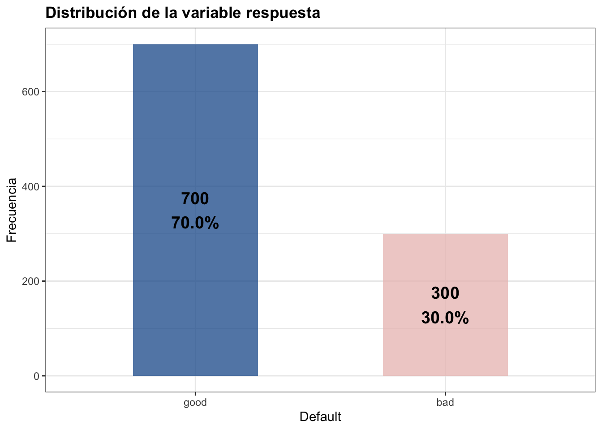
En primer lugar, se analiza la variable dependiente y se encuentra que en los datos predomina el buen compotamiento en cuanto a los pagos, abarcando este el 70% de la muestra y dejando solo el 30% de los datos como registros de clientes con dificultades para realizar los pagos acordados. Dadas las anteriores proporciones, es necesario aplicar técnicas que permitan balancear la información, ya que de no hacerlo, modelos de machine learning como Random Forest y Árboles de Clasificación podrían tener tendencia a sesgarse al momento de configurar sus nodos, favoreciendo a la clase mayoritaria y limitando la identificación adecuada de la minoritaria. Para el modelo de Regresión Logística el impacto puede atenuarse un poco más al tener estrategias como la ponderación de clases o el ajuste del umbral de clasificación, sin embargo, para este ejercicio las técnicas de balanceo se aplicarán sobre los datos y se mantendrá de este modo para la especificación de los modelos.
Balanceo de los datos
Para iniciar con el balanceo de las clases se implementó undersampling y subsampling conjuntamente. Esto permite reducir el número de observaciones en la clase mayoritaria que en este caso hace referencia al buen comportamiento en cuanto a los pagos, al mismo tiempo que se aumentan la información de la clase minoritaria. La proporción deseada para ambas clases debería rondar en el 50%, obteniendo así un conjunto balanceado. Así, se obtienen los siguientes resultados:
[1] "Balanceo usando subsampling y undersampling (both):"
good bad
397 403 También se implementa la técnica de balanceo SMOTE para la generación de nuevos datos sintéticos que permitirán aumentar a la clase minoritaria (impago). Particularmente, se busca que la clase bad en la variable dependiente tienda a tener el mismo tamaño que la clase mayoritaria, manteniendo las observaciones originales añadiendo al mismo tiempo las sintéticas:
[1] "Balanceo usando SMOTE"
good bad
560 560 3 Regresión logística
Inicialmente se estima el modelo logístico donde primero se contemplan la totalidad de las variables explicativas para establecer cuáles de ellas resultan altamente significativas en la clasificación del default de los clientes. Esta identificación establece un precedente para comenzar un proceso de depuración en la cual se mantenga las variables que presentan un mayor poder explicativo. Para mayor comodidad se establece a good como la categoría de referencia en la variable dependiente, mientras que se pronosticará la probabilidad la categoría bad.
Modelo saturado
El modelo saturado incluye todas las variables disponibles como predictoras.
Call:
glm(formula = default ~ ., family = binomial, data = data_train)
Coefficients:
Estimate Std. Error z value
(Intercept) -2.297e+00 1.357e+00 -1.692
checking_statusgreater_200 -1.069e+00 4.672e-01 -2.288
checking_statusless_0 2.266e-01 2.352e-01 0.964
checking_statusno_account -1.541e+00 2.572e-01 -5.991
duration 2.183e-02 1.032e-02 2.116
credit_historycritical_other -1.569e+00 4.923e-01 -3.186
credit_historydelay -7.271e-01 5.219e-01 -1.393
credit_historyexisting_paid -5.267e-01 4.242e-01 -1.242
credit_historyno_credit_all_paid 9.528e-02 6.200e-01 0.154
credit_amount 1.063e-04 4.997e-05 2.128
savings500_1000 3.618e-02 4.993e-01 0.072
savingsgreater_1000 -1.181e+00 6.839e-01 -1.726
savingsless_100 3.296e-01 3.105e-01 1.061
savingsunknown -9.362e-01 3.913e-01 -2.393
employment4_7 -3.473e-01 2.915e-01 -1.192
employmentgreater_7 2.936e-03 2.878e-01 0.010
employmentless_1 1.196e-01 2.672e-01 0.448
employmentunemployed 3.119e-01 4.611e-01 0.676
installment_rate 3.572e-01 1.009e-01 3.541
personal_status_sexmale_divorced_separated -4.631e-02 4.377e-01 -0.106
personal_status_sexmale_married -3.296e-01 3.443e-01 -0.957
personal_status_sexmale_single -5.567e-01 2.345e-01 -2.374
other_debtorsguarantor -1.638e+00 6.221e-01 -2.632
other_debtorsnone -6.955e-01 4.530e-01 -1.536
residence_since -2.895e-02 9.515e-02 -0.304
propertycar_or_other -2.955e-01 2.509e-01 -1.178
propertyreal_estate -3.395e-01 2.713e-01 -1.251
propertyunknown_no_property 6.159e-01 4.676e-01 1.317
age -1.478e-02 1.039e-02 -1.423
other_installment_plansnone -4.424e-01 2.805e-01 -1.577
other_installment_plansstores -2.268e-01 4.831e-01 -0.469
housingown 8.157e-01 5.203e-01 1.568
housingrent 1.218e+00 5.558e-01 2.191
existing_credits 2.034e-01 2.199e-01 0.925
jobskilled_official 1.050e-01 3.221e-01 0.326
jobunemployed_unskilled -3.085e-01 7.881e-01 -0.391
jobunskilled_resident 5.741e-02 4.003e-01 0.143
people_liable -2.573e-03 2.869e-01 -0.009
telephoneyes -2.568e-01 2.253e-01 -1.140
foreign_workeryes 1.600e+00 7.419e-01 2.156
purpose_groupedInvestment/Development 2.984e-01 2.866e-01 1.041
purpose_groupedOthers -1.323e-02 8.367e-01 -0.016
purpose_groupedVehicles 3.484e-01 2.203e-01 1.581
Pr(>|z|)
(Intercept) 0.090597 .
checking_statusgreater_200 0.022118 *
checking_statusless_0 0.335216
checking_statusno_account 2.09e-09 ***
duration 0.034316 *
credit_historycritical_other 0.001442 **
credit_historydelay 0.163552
credit_historyexisting_paid 0.214361
credit_historyno_credit_all_paid 0.877851
credit_amount 0.033361 *
savings500_1000 0.942230
savingsgreater_1000 0.084262 .
savingsless_100 0.288508
savingsunknown 0.016724 *
employment4_7 0.233435
employmentgreater_7 0.991861
employmentless_1 0.654491
employmentunemployed 0.498769
installment_rate 0.000398 ***
personal_status_sexmale_divorced_separated 0.915721
personal_status_sexmale_married 0.338400
personal_status_sexmale_single 0.017601 *
other_debtorsguarantor 0.008477 **
other_debtorsnone 0.124652
residence_since 0.760905
propertycar_or_other 0.238887
propertyreal_estate 0.210780
propertyunknown_no_property 0.187810
age 0.154846
other_installment_plansnone 0.114714
other_installment_plansstores 0.638795
housingown 0.116963
housingrent 0.028421 *
existing_credits 0.354784
jobskilled_official 0.744370
jobunemployed_unskilled 0.695516
jobunskilled_resident 0.885973
people_liable 0.992843
telephoneyes 0.254438
foreign_workeryes 0.031077 *
purpose_groupedInvestment/Development 0.297844
purpose_groupedOthers 0.987386
purpose_groupedVehicles 0.113775
---
Signif. codes: 0 '***' 0.001 '**' 0.01 '*' 0.05 '.' 0.1 ' ' 1
(Dispersion parameter for binomial family taken to be 1)
Null deviance: 977.38 on 799 degrees of freedom
Residual deviance: 723.57 on 757 degrees of freedom
AIC: 809.57
Number of Fisher Scoring iterations: 5Como se observa, las variables cuantitativas de duración y monto del crédito son levemente significativas y positivas por lo que pueden contribuir a aumentar la probabilidad de default, lo cual va en línea con la intuición económica pues, por ejemplo, ante un incremento de 1000 DM en el monto del crédito, con el beta de 0.106 y su resultado exponenciado de 1.11, se encuentra un incremento de 11% en términos de odds de incumplimiento manteniendo el resto de variables constantes. Esto podría denotar que mayores montos pueden ser más riesgosos de recuperar para la entidad financiera. A su vez, la duración del crédito con un beta de 0.0218 y un valor exponencial de 1.022 puede denotar que un mes adicional de crédito aumenta en 2.2% los odds de incumplimiento, manteniendo el resto de variables constantes, lo que podría suponer que durante plazos más extensos es posible que puedan ocurrir un mayor número de imprevistos que puedan afectar el cumplimiento de pago del crédito. Finalmente, variables como installment_rate resulta altamente explicativa, también catalogándose como un factor de incidencia al default, donde un beta de 0.357 y exponenciado de 1.43, denotaría que cada aumento de una unidad en la tasa cobrada por el crédito aumenta en aproximadamente 43% los odds de incumpliento, manteniendo el resto de variables constantes, pues puede estar ligado a un encarecimiento del crédito que podría no pagarse apropiadamente por parte del cliente. Mientras que otras variables numéricas y asociadas a una perspectiva socioeconómica, no resultan significativas estadísticamente (como es el caso de resident_since, age, existing_credits y people_liable).
Ahora, en cuanto a las variables categóricas, se encuentra que checking_status presenta algunas categorías significativas con respecto a su base (0_200), como ocurre con greater_200 y no_account, por lo que tener un saldo relativamente elevado en la cuenta corriente existente en la entidad financiera así como no tener una cuenta corriente pueden aportar a la explicación del default en contraste con tener una cuenta corriente con 0 a 200 marcos alemanes, manteniendo el resto de variables constantes. Para el primer caso, con un beta de -1.069, se encuentra que al calcularlo con la exponencial, el resultado es 0.34 (34%) por lo que los clientes con saldos superiores a 2000 DM tienen aproximadamente un 66% menos odds de caer en default con respecto a la categoría base. Esto probablemente se justifique en que tener mayor acumulación de dinero en las cuentas puede funcionar como un colateral ante el incumplimiento. Mientras tanto, no poseer cuenta corriente con un beta de -1.541 y aplicando la exponencial 0.21 (21%) muestra los clientes sin una cuenta corriente tienen 79% menos probabilidad de incumplimiento en contraste con quienes tienen una cuenta valorada entre 0 y 200 DM. Aunque este resultado puede parecer contraintuitivo, podría sugerir preliminarmente que no mantener una cuenta corriente en el banco al que se le solicita el crédito no necesariamente implica una mayor probabilidad de impago. Ambos análisis manteniendo el resto de variables constantes.
Por otro lado, la variable de historial crediticio (credit_history) solo presenta una categoría significativa con respecto a su base (all_paid) y es critical/other. Con un beta de -1.569 y un valor exponenciado de 0.21, denotan que aunque los clientes tengan cuentas críticas en otras entidades, presentan al rededor de 79% menos odds ratios de incumplimiento con respecto a quienes tienen sus obligaciones al día, manteniendo el resto de variables constantes. Este resultado parece en primera instancia contraintuitivo y podría ser un reflejo del uso no balanceado de la base.
Igualmente, la variable de ahorros (savings) muestra que las categorías greater_1000 y unknow con respecto a la base 100_500, son significativas. Particularmente, se encuentra que si el cliente no tiene un status de ahorro conocido, su beta exponenciado toma el valor de 0.39, por lo que presentan 61% menos odds de incumplimiento respecto a quienes poseen ahorros entre 100 y 500 DM. Igualmente, con una significancia más baja, el mantener ahorros superiores a los 1000 DM, con un coeficiente de -1.569 y un valor exponenciado de 0.21, se asocia con un 79% menos de odds de incumplimiento respecto a la categoría base. Esto con el resto de variables constantes.
Con respecto al sexo y el estado civil de los clientes, se encuentra que los hombres solteros (male_single) son una categoría significativa con respecto a la categoría base female_divorced_separated_married. Así, con un beta de -0.557 y valor exponenciado de 0.57, los hombres solteros presentan aproximadamente un 43% menos odds de incumplimiento respecto a la categoría base, con el resto de variables constantes. Este resultado podría estar asociado a un menor número de responsabilidades crediticias.
La variable de other_debtors presenta significancia estadística en la categoría guarantor, con un beta de -1.638 con valor exponenciado de 0.19, con respecto a la base co_applicant. Así, los clientes respaldados por un garante presentan aproximadamente 81% menos de odds de incumplimiento en contraste con aquellos respaldados por un codeudor. Esto con el resto de variables constantes. El resultado es consistente, ya que el respaldo de un garante minimiza la posibilidad de impago al tomar la responsabilidad de los pagos del crédito en caso de que el titular falle.
Housing presenta significancia en su categoría rent, por lo que un beta de 1.218 cuyo valor exponenciado es de 3.38, denota que clientes que viven una casa alquilada tienen aproximadamente 3.4 veces mayores odds de incumplimiento con respecto a la categoría base free, manteniendo el resto de variables constantes. Esto puede tener sentido ya que estas personas presentan un mayor número de obligaciones monetarias para cumplir.
Finalmente, las variable de foreign_worker en su categoría ‘yes’ presenta significancia estadística, con un beta de 1.60 y valor exponenciado de 4.95, por lo cual los trabajadores extranjeros presentan aproximadamente 5 veces mayores odds de incumplimiento con respecto a los clientes que son trabajadores nacionales, manteniendo el resto de las variables constantes. Este resultado puede tener sentido ya que los trabajadores extranjeros pueden estar expuestos a choques de diversa índole en sus economías de procedencia, lo cual puede desestabilizar su compromiso con el pago de créditos. Igualmente, Entre las variables categóricas employment, property, other_installment_plans, job, telephone y purpose_grouped no presentan significancia estadística.
Selección de variables
Como estrategia inicial, se aplica selección backward usando el criterio AIC.
Call:
glm(formula = default ~ checking_status + duration + credit_history +
credit_amount + savings + installment_rate + personal_status_sex +
other_debtors + age + foreign_worker, family = binomial,
data = data_train)
Coefficients:
Estimate Std. Error z value
(Intercept) -1.030e+00 9.996e-01 -1.031
checking_statusgreater_200 -1.137e+00 4.536e-01 -2.506
checking_statusless_0 2.618e-01 2.267e-01 1.155
checking_statusno_account -1.560e+00 2.499e-01 -6.241
duration 1.761e-02 9.696e-03 1.816
credit_historycritical_other -1.630e+00 4.295e-01 -3.794
credit_historydelay -7.607e-01 4.838e-01 -1.572
credit_historyexisting_paid -7.214e-01 3.951e-01 -1.826
credit_historyno_credit_all_paid 2.050e-01 5.834e-01 0.351
credit_amount 1.098e-04 4.453e-05 2.466
savings500_1000 -1.554e-01 4.906e-01 -0.317
savingsgreater_1000 -1.169e+00 6.461e-01 -1.809
savingsless_100 2.350e-01 2.980e-01 0.789
savingsunknown -9.687e-01 3.803e-01 -2.547
installment_rate 3.275e-01 9.570e-02 3.422
personal_status_sexmale_divorced_separated -9.107e-02 4.199e-01 -0.217
personal_status_sexmale_married -3.949e-01 3.346e-01 -1.180
personal_status_sexmale_single -6.162e-01 2.132e-01 -2.890
other_debtorsguarantor -1.617e+00 5.994e-01 -2.698
other_debtorsnone -7.069e-01 4.336e-01 -1.630
age -1.503e-02 8.697e-03 -1.728
foreign_workeryes 1.423e+00 7.413e-01 1.919
Pr(>|z|)
(Intercept) 0.302677
checking_statusgreater_200 0.012215 *
checking_statusless_0 0.248216
checking_statusno_account 4.36e-10 ***
duration 0.069311 .
credit_historycritical_other 0.000148 ***
credit_historydelay 0.115895
credit_historyexisting_paid 0.067832 .
credit_historyno_credit_all_paid 0.725301
credit_amount 0.013647 *
savings500_1000 0.751376
savingsgreater_1000 0.070455 .
savingsless_100 0.430377
savingsunknown 0.010861 *
installment_rate 0.000622 ***
personal_status_sexmale_divorced_separated 0.828311
personal_status_sexmale_married 0.237928
personal_status_sexmale_single 0.003852 **
other_debtorsguarantor 0.006969 **
other_debtorsnone 0.103071
age 0.083988 .
foreign_workeryes 0.054977 .
---
Signif. codes: 0 '***' 0.001 '**' 0.01 '*' 0.05 '.' 0.1 ' ' 1
(Dispersion parameter for binomial family taken to be 1)
Null deviance: 977.38 on 799 degrees of freedom
Residual deviance: 742.17 on 778 degrees of freedom
AIC: 786.17
Number of Fisher Scoring iterations: 5El procedimiento backward parte del modelo con todas las variables y elimina progresivamente aquellas que no aportan suficiente información según el criterio AIC.
Este procedimiento debe entenderse como una ayuda exploratoria, no como una regla automática definitiva. La selección final también debe considerar criterios estadísticos, interpretabilidad y sentido financiero. Como es posible observar en la anterior salida, se mantienen las variables: checking_status, duration, credit_history, credit_amount, savings, installment_rate, personal_status_sex, other_debtors, age, foreign_worker. Dichas variables también fueron identificadas como significativas en la mayoría de casos del modelo saturado, y de hecho, en su conjunto el criterio AIC disminuyó de 809.57 a 786.17, lo que podría entenderse como una mejora con respecto al modelo saturado, apelando a una menor complejidad.
La variable de checking_status mantiene la significancia y el signo en sus categorías greater_200 y no_account con respecto a la categoría base 0_200, al igual que en el modelo saturado. Así, se encuentra un beta de -1.137 cuyo valor exponenciado es de 0.32, lo que denota que clientes con cuentas corrientes que contienen más de 200 DM presentan aproximadamente 68% menores odds de incumplimiento respecto a la categoría base con el resto de variables constantes. Mientras que el no tener una cuenta en la entidad financiera se asocia con 79% menores odds de incumplimiento en contraste con aquellas clientes con cuentas entre 0 y 200 DM.
Por otro lado, la duración del préstamo presenta un valor exponenciado de 1.018, lo que aumentaría aproximadamente un 1.8% los odds de incumplimiento por cada mes adicional de duración del préstamo, manteniendo el resto de variables constantes y con una significancia estadística moderada.
En cuanto al historial crediticio (credit_history) se encuentra que aumenta la significancia estadística en critical_other y se mantiene el signo con respecto al modelo saturado, por lo cual con un beta de -1.630 cuyo valor exponencial es 0.20 aproximadamente, se tiene que los clientes bajo esta categoría presentan casi 80% menores odds de incumplimiento con respecto a la categoría de referencia all_paid. Por otro lado, la categoría existing_paid aquiere relevancia, con un coeficiente exponenciado de 0.49, lo que indicaría que los clientes que tienen créditos al día se relacionan con 51% menores odds de incumplimiento, manteniendo el resto de variables constantes, representando un menor riesgo de incumplimiento.
Por su parte, la variable credit_amount se mantiene significativa y con signo positivo en contraste con el modelo saturado, por lo que bajo un beta 0.00011, bajo un incremento de 1000 DMs se tiene un odd ratio de 1.12 aproximadamente, por lo que este aumento en el valor del crédito aumenta en 12% los odds de incumplimiento, dejando el resto de variables constantes. Esto podría estar ligado a que un aumento en el monto del crédito podría saturar a su capacidad de pago, llevándolo a eventuales riesgos de impago.
Ahora, la variable de ahorros mantiene significativas sus categorías de greater_1000 y unknow con respecto a la catgoría base 100_500. Esto denotaría que con un odds de aproximadamente 0.31, un cliente con un nivel de ahorro superior a 1000 DM presenta 69% menores odds de incumplimiento con respecto a la categoría de referencia. Un efecto similar ocurre con el desconocimiento de la tenencia de ahorros cuyo beta es igual -0.969 cuyo valor exponenciado es de 0.38, por lo que presenta 62% menores odds de incumplimiento con respecto a la base. Todo esto manteniendo las variables constantes. Así, la tenencia de ahorros, puede disminuir la probabilidad del default al representar un colchón financiero en momentos de estrés aunque no reportar ahorros tampoco es un determinante rígido para caer en default.
La variable installment_rate permanece altamente significativa con un beta de 0.328 y un valor exponenciado de 1.39, por lo que un aumento en la tasa impuesta para el préstamo aumenta 39% los odds de incumplimiento, mateniendo constantes el resto de variables. Nuevamente denotando que el encarecimiento del crédito puede afectar en el pago oportuno.
El estado civil y el sexo mantienen como significativa su categoría de hombre soltero por lo que con un beta de -0.616 y un valor exponenciado de 0.54 se tiene que los hombres solteros presentan 46% menores odds de incumplimiento con respecto a mujeres casadas, divorciadas o separadas, manteniendo el resto de variables constantes.
Los créditos con garantes presentan al rededor de un 80% de menores odds de incumplimiento con respecto a la categoría base de co-applicant y manteniendo el resto de variables constantes. Este resultado puede estar asociado a que los créditos bajo esta modalidad serían asumidos por el garante en caso de impago.
Finalmente la edad es una variable levemente significativa con un odds ratio de 0.98 lo que señalaría que por cada año adicional de edad se reduce en 1.5% los odds de incumplimiento, manteniendo el resto de variables constantes, lo que podría estar relacionado con un mayor estabilidad laboral y menos decisiones adversas que puedan poner en peligro la estabilidad financiera del cliente, sin embargo, hay que tener precaución con esta interpretación ya que no necesariamente aplica para la generalidad de la muestra. Mientras que el ser un trabajador extrajero genera un beta de 1.423 y un valor exponencial de 4.15 lo que supondría que los trabajadores extranjeros presentan 4.1 veces mayores odds de incumplimiento con respecto a los trabajadores nacionales, manteniendo el resto de variables constantes y reflejando la vulnerabilidad a choques externos que pueden tener este tipo de clientes.
Evaluación del modelo reducido
Significancia global de variables
car::Anova(modelo_step)Analysis of Deviance Table (Type II tests)
Response: default
LR Chisq Df Pr(>Chisq)
checking_status 74.500 3 4.636e-16 ***
duration 3.318 1 0.0685096 .
credit_history 28.600 4 9.424e-06 ***
credit_amount 6.187 1 0.0128670 *
savings 23.785 4 8.821e-05 ***
installment_rate 12.199 1 0.0004782 ***
personal_status_sex 9.024 3 0.0289728 *
other_debtors 7.792 2 0.0203212 *
age 3.049 1 0.0807973 .
foreign_worker 4.630 1 0.0314214 *
---
Signif. codes: 0 '***' 0.001 '**' 0.01 '*' 0.05 '.' 0.1 ' ' 1Esta prueba evalúa la contribución de cada variable al modelo, considerando el resto de variables incluidas. Así, se evidencia que todas las variables plantean al menos un grado de contribución con una significancia al 10%, lo que podría denotar su relevancia en la explicación del default. No obstante, entre todas las variables resalta la tenencia de una cuenta corriente, el historial crediticio, los ahorros y la tasa de interés a la cual se cobra el crédito, siendo estas características altamente significativas y muy asociadas a la caracterización financiera de los individuos, lo que podría ser una señal de que para evaluar el incumplimiento este tipo de variables tiene mayor poder explicativo.
Multicolinealidad
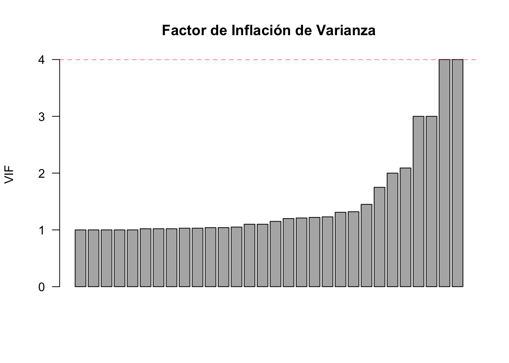
El VIF permite detectar posibles problemas de multicolinealidad. Valores altos indican que una variable puede estar fuertemente relacionada con otras variables explicativas, lo que dificulta la interpretación individual de los coeficientes. Considerando lo anterior, no se encuentran problemas graves de multicolinealidad (Al parecer no hay multicloinealidad, VIF < 4) por lo que las variables propuestas en el modelo reducido pueden coexistir sin generar impurezas o sesgos en el efecto del resto de variables.
Modelo final propuesto
A partir del análisis anterior se ajusta un modelo final más parsimonioso. De acuerdo con lo anterior, age y duration son los menos significativos, especialmente age, podriamos quitarlo. Las variables que se seleccionan son: checking_status, duration, credit_history, credit_amount, savings, installment_rate, personal_status_sex, other_debtors, foreign_worker
formula_rl <- default ~ checking_status + duration + credit_history + credit_amount + savings + installment_rate + personal_status_sex + other_debtors + foreign_worker
Call:
glm(formula = formula_rl, family = binomial, data = data_train)
Coefficients:
Estimate Std. Error z value
(Intercept) -1.405e+00 9.773e-01 -1.438
checking_statusgreater_200 -1.183e+00 4.497e-01 -2.631
checking_statusless_0 2.505e-01 2.264e-01 1.106
checking_statusno_account -1.564e+00 2.497e-01 -6.264
duration 1.880e-02 9.721e-03 1.934
credit_historycritical_other -1.682e+00 4.277e-01 -3.933
credit_historydelay -7.915e-01 4.835e-01 -1.637
credit_historyexisting_paid -7.222e-01 3.942e-01 -1.832
credit_historyno_credit_all_paid 1.838e-01 5.832e-01 0.315
credit_amount 1.054e-04 4.488e-05 2.349
savings500_1000 -1.987e-01 4.869e-01 -0.408
savingsgreater_1000 -1.182e+00 6.420e-01 -1.841
savingsless_100 2.095e-01 2.973e-01 0.705
savingsunknown -1.012e+00 3.787e-01 -2.671
installment_rate 3.155e-01 9.548e-02 3.304
personal_status_sexmale_divorced_separated -1.809e-01 4.149e-01 -0.436
personal_status_sexmale_married -3.847e-01 3.344e-01 -1.150
personal_status_sexmale_single -6.883e-01 2.090e-01 -3.293
other_debtorsguarantor -1.603e+00 6.002e-01 -2.671
other_debtorsnone -6.863e-01 4.347e-01 -1.579
foreign_workeryes 1.377e+00 7.386e-01 1.864
Pr(>|z|)
(Intercept) 0.150564
checking_statusgreater_200 0.008503 **
checking_statusless_0 0.268653
checking_statusno_account 3.76e-10 ***
duration 0.053141 .
credit_historycritical_other 8.37e-05 ***
credit_historydelay 0.101638
credit_historyexisting_paid 0.066905 .
credit_historyno_credit_all_paid 0.752645
credit_amount 0.018799 *
savings500_1000 0.683216
savingsgreater_1000 0.065560 .
savingsless_100 0.481080
savingsunknown 0.007553 **
installment_rate 0.000952 ***
personal_status_sexmale_divorced_separated 0.662729
personal_status_sexmale_married 0.250056
personal_status_sexmale_single 0.000990 ***
other_debtorsguarantor 0.007569 **
other_debtorsnone 0.114394
foreign_workeryes 0.062308 .
---
Signif. codes: 0 '***' 0.001 '**' 0.01 '*' 0.05 '.' 0.1 ' ' 1
(Dispersion parameter for binomial family taken to be 1)
Null deviance: 977.38 on 799 degrees of freedom
Residual deviance: 745.22 on 779 degrees of freedom
AIC: 787.22
Number of Fisher Scoring iterations: 5Explicar…
Significancia de variables del modelo final
Analysis of Deviance Table (Type II tests)
Response: default
LR Chisq Df Pr(>Chisq)
checking_status 75.039 3 3.555e-16 ***
duration 3.757 1 0.0525826 .
credit_history 31.097 4 2.925e-06 ***
credit_amount 5.641 1 0.0175452 *
savings 24.543 4 6.217e-05 ***
installment_rate 11.369 1 0.0007467 ***
personal_status_sex 11.308 3 0.0101713 *
other_debtors 7.685 2 0.0214361 *
foreign_worker 4.356 1 0.0368822 *
---
Signif. codes: 0 '***' 0.001 '**' 0.01 '*' 0.05 '.' 0.1 ' ' 1Explicar…
Multicolinealidad del modelo final
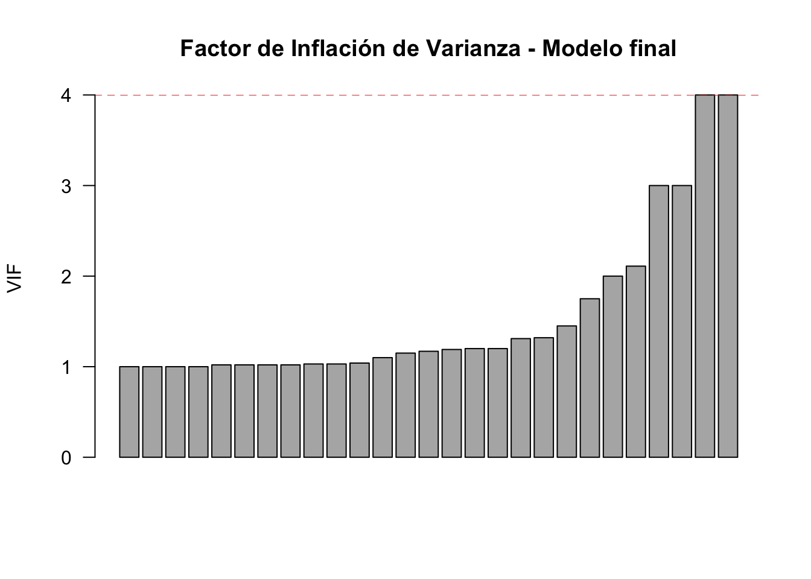
Explicar…
Comparación mediante razón de verosimilitud
Modelo final versus modelo saturado
Analysis of Deviance Table
Model 1: default ~ checking_status + duration + credit_history + credit_amount +
savings + installment_rate + personal_status_sex + other_debtors +
foreign_worker
Model 2: default ~ checking_status + duration + credit_history + credit_amount +
savings + employment + installment_rate + personal_status_sex +
other_debtors + residence_since + property + age + other_installment_plans +
housing + existing_credits + job + people_liable + telephone +
foreign_worker + purpose_grouped
Resid. Df Resid. Dev Df Deviance Pr(>Chi)
1 779 745.22
2 757 723.57 22 21.652 0.4808Esta prueba permite evaluar si el modelo saturado mejora significativamente el ajuste respecto al modelo final. Si la diferencia no es significativa, se prefiere el modelo más simple. Explicar, con base en p-value al parecer la diferencia entre modelos no es significativa, por lo que el modelo final sería mejor por principio de parsimonia…
Modelo final versus modelo nulo
Analysis of Deviance Table
Model 1: default ~ 1
Model 2: default ~ checking_status + duration + credit_history + credit_amount +
savings + installment_rate + personal_status_sex + other_debtors +
foreign_worker
Resid. Df Resid. Dev Df Deviance Pr(>Chi)
1 799 977.38
2 779 745.22 20 232.16 < 2.2e-16 ***
---
Signif. codes: 0 '***' 0.001 '**' 0.01 '*' 0.05 '.' 0.1 ' ' 1Esta prueba compara el modelo final contra un modelo sin variables explicativas. Un resultado significativo indica que el conjunto de predictores mejora la explicación del default. Explciar… para este caso si es significativa la diferencia, por o que el modelo final es mejor que el modelo nulo
Interpretación de parámetros
En regresión logística, los coeficientes se interpretan en términos de log-odds. Para facilitar la interpretación, se calculan los odds ratios mediante la transformación exponencial de los coeficientes.
$Coeficientes
Coeficiente 2.5 % 97.5 %
(Intercept) -1.405 -3.464 0.424
checking_statusgreater_200 -1.183 -2.123 -0.342
checking_statusless_0 0.250 -0.193 0.695
checking_statusno_account -1.564 -2.062 -1.081
duration 0.019 0.000 0.038
credit_historycritical_other -1.682 -2.535 -0.852
credit_historydelay -0.792 -1.753 0.149
credit_historyexisting_paid -0.722 -1.508 0.045
credit_historyno_credit_all_paid 0.184 -0.948 1.351
credit_amount 0.000 0.000 0.000
savings500_1000 -0.199 -1.184 0.736
savingsgreater_1000 -1.182 -2.565 0.000
savingsless_100 0.209 -0.366 0.803
savingsunknown -1.012 -1.763 -0.274
installment_rate 0.315 0.131 0.506
personal_status_sexmale_divorced_separated -0.181 -1.009 0.625
personal_status_sexmale_married -0.385 -1.054 0.261
personal_status_sexmale_single -0.688 -1.101 -0.280
other_debtorsguarantor -1.603 -2.810 -0.446
other_debtorsnone -0.686 -1.548 0.167
foreign_workeryes 1.377 0.076 3.043
$Odds_Ratio
Coeficiente 2.5 % 97.5 %
(Intercept) 0.245 0.031 1.528
checking_statusgreater_200 0.306 0.120 0.710
checking_statusless_0 1.285 0.824 2.004
checking_statusno_account 0.209 0.127 0.339
duration 1.019 1.000 1.039
credit_historycritical_other 0.186 0.079 0.426
credit_historydelay 0.453 0.173 1.160
credit_historyexisting_paid 0.486 0.221 1.046
credit_historyno_credit_all_paid 1.202 0.388 3.861
credit_amount 1.000 1.000 1.000
savings500_1000 0.820 0.306 2.089
savingsgreater_1000 0.307 0.077 1.000
savingsless_100 1.233 0.694 2.231
savingsunknown 0.364 0.172 0.761
installment_rate 1.371 1.140 1.658
personal_status_sexmale_divorced_separated 0.834 0.365 1.868
personal_status_sexmale_married 0.681 0.348 1.298
personal_status_sexmale_single 0.502 0.333 0.755
other_debtorsguarantor 0.201 0.060 0.640
other_debtorsnone 0.503 0.213 1.181
foreign_workeryes 3.962 1.079 20.978Los Odds Ratio permiten cuantificar cómo cambia el riesgo de incumplimiento ante cambios en las variables explicativas. Valores mayores a 1 indican factores asociados a un mayor riesgo, mientras que valores menores a 1 indican factores protectores frente al incumplimiento. Sin embargo, siempre deben interpretarse junto con sus intervalos de confianza para evaluar la significancia estadística de los efectos observados. En resumen:
- OR > 1: aumenta la probabilidad de incumplimiento (default = Si).
- OR < 1: disminuye la probabilidad de incumplimiento.
- OR = 1: no tiene efecto.
- Un efecto suele considerarse estadísticamente significativo cuando el IC95% del OR no contiene el valor 1.
Explicar…
Evaluación de desempeño
La regresión logística no genera directamente una clasificación, sino una probabilidad estimada de pertenecer a la clase positiva.
Curva ROC y AUC
[1] "Resumen del score:" Min. 1st Qu. Median Mean 3rd Qu. Max.
-5.6965 -2.2466 -1.2229 -1.2087 -0.1162 2.9185 Explicar…
[1] "Resumen probabilidades datos de entrenamiento:" Min. 1st Qu. Median Mean 3rd Qu. Max.
0.003346 0.095643 0.227435 0.300000 0.470985 0.948752 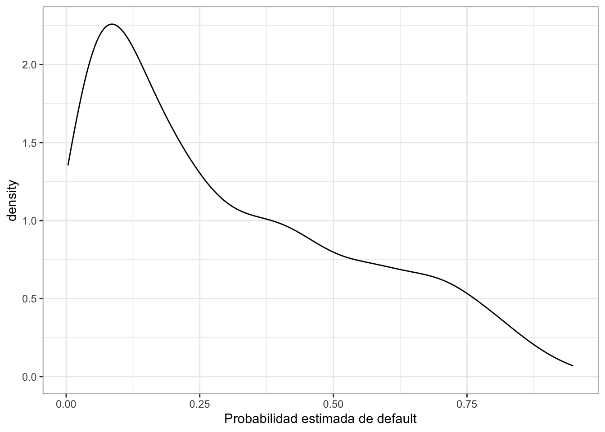
Explicar…
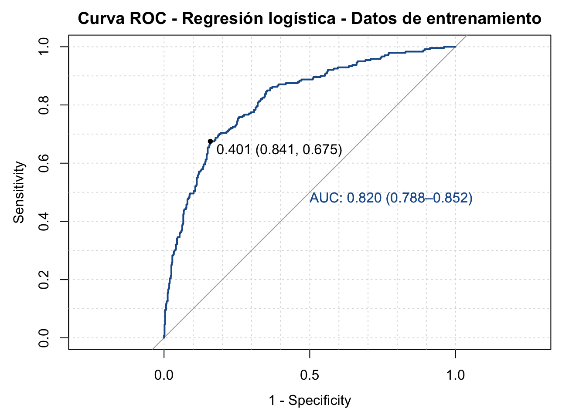
Explicar…
| Métrica | RL original - Train original | RL original - Test |
|---|---|---|
| Accuracy | 0.791 | 0.695 |
| Kappa | 0.509 | 0.297 |
| Sensitivity | 0.675 | 0.550 |
| Specificity | 0.841 | 0.757 |
| Precision | 0.645 | 0.493 |
| F1 | 0.660 | 0.520 |
| Balanced_Accuracy | 0.758 | 0.654 |
| AUC | 0.820 | 0.711 |
| MCC | 0.510 | 0.298 |
Explicar…
Distribución de probabilidades estimadas datos de entrenamiento
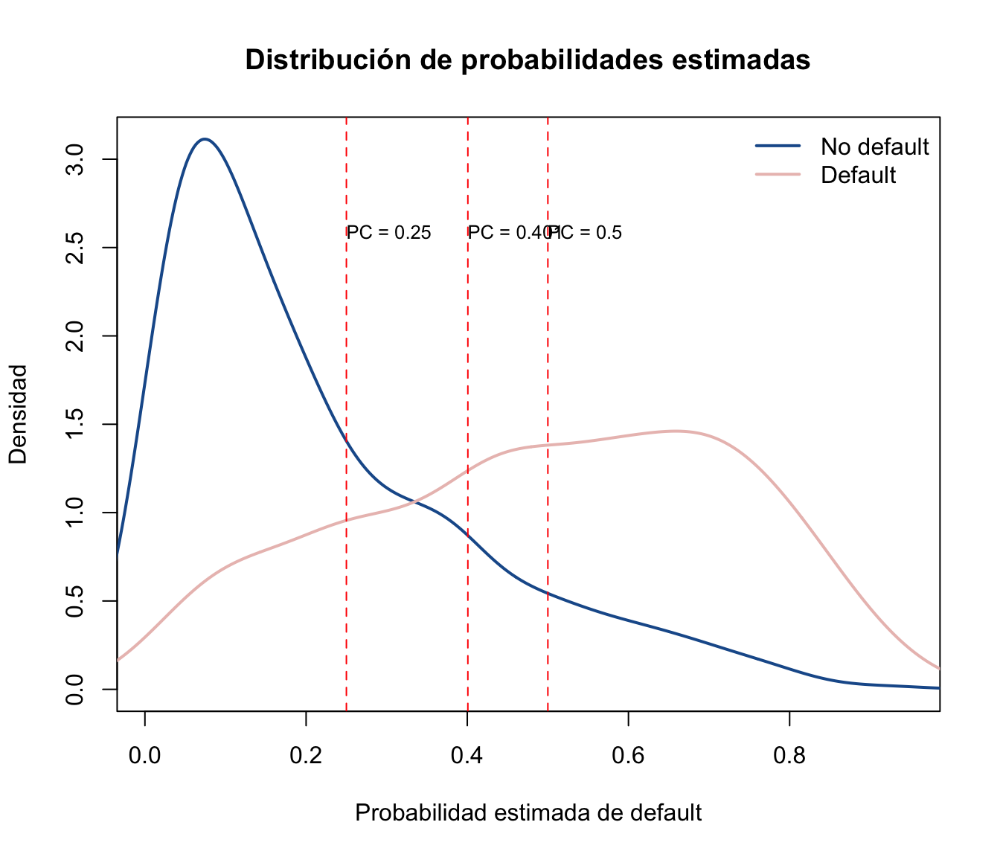
Este gráfico muestra cómo se distribuyen las probabilidades estimadas para los clientes con y sin default. Si las distribuciones se separan claramente, el modelo tiene mayor capacidad discriminante.
Curva ROC-AUC y distribución de probabilidades en datos de prueba
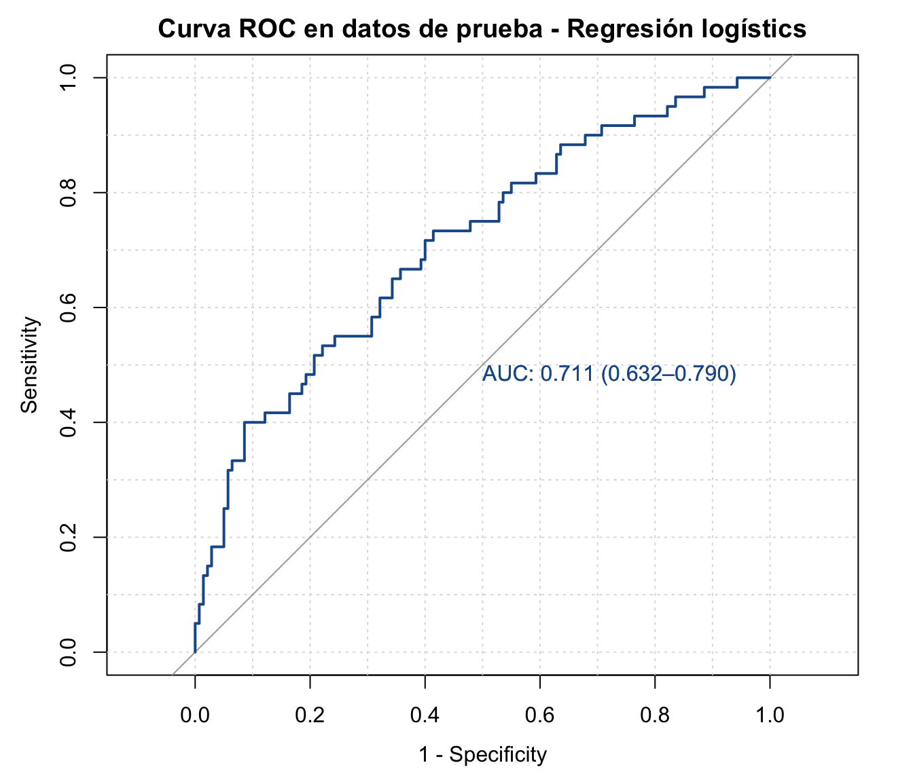
Explicar …
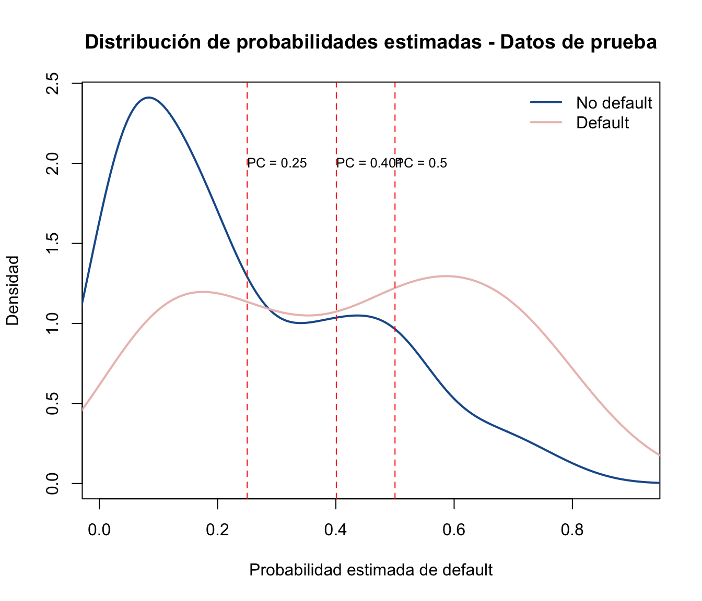
4 Regresión logística con datos balanceados - Método both
Call:
glm(formula = formula_rl, family = binomial, data = data_train_bal_both)
Coefficients:
Estimate Std. Error z value
(Intercept) -6.863e-01 9.354e-01 -0.734
checking_statusgreater_200 -1.397e+00 4.151e-01 -3.365
checking_statusless_0 1.626e-02 2.248e-01 0.072
checking_statusno_account -1.727e+00 2.418e-01 -7.145
duration 9.726e-03 9.700e-03 1.003
credit_historycritical_other -1.726e+00 4.340e-01 -3.978
credit_historydelay -7.863e-01 5.052e-01 -1.556
credit_historyexisting_paid -6.457e-01 4.113e-01 -1.570
credit_historyno_credit_all_paid 3.250e-01 6.995e-01 0.465
credit_amount 2.000e-04 4.496e-05 4.447
savings500_1000 -9.263e-03 4.657e-01 -0.020
savingsgreater_1000 -1.425e+00 8.082e-01 -1.763
savingsless_100 6.859e-01 2.730e-01 2.512
savingsunknown -3.579e-01 3.513e-01 -1.019
installment_rate 4.639e-01 9.335e-02 4.970
personal_status_sexmale_divorced_separated 3.467e-01 4.297e-01 0.807
personal_status_sexmale_married -4.023e-01 3.319e-01 -1.212
personal_status_sexmale_single -8.592e-01 2.050e-01 -4.190
other_debtorsguarantor -1.499e+00 5.928e-01 -2.529
other_debtorsnone -1.265e+00 4.738e-01 -2.670
foreign_workeryes 1.229e+00 6.184e-01 1.987
Pr(>|z|)
(Intercept) 0.463156
checking_statusgreater_200 0.000767 ***
checking_statusless_0 0.942327
checking_statusno_account 9.00e-13 ***
duration 0.316003
credit_historycritical_other 6.96e-05 ***
credit_historydelay 0.119639
credit_historyexisting_paid 0.116375
credit_historyno_credit_all_paid 0.642218
credit_amount 8.71e-06 ***
savings500_1000 0.984130
savingsgreater_1000 0.077931 .
savingsless_100 0.011993 *
savingsunknown 0.308292
installment_rate 6.70e-07 ***
personal_status_sexmale_divorced_separated 0.419738
personal_status_sexmale_married 0.225533
personal_status_sexmale_single 2.78e-05 ***
other_debtorsguarantor 0.011451 *
other_debtorsnone 0.007585 **
foreign_workeryes 0.046878 *
---
Signif. codes: 0 '***' 0.001 '**' 0.01 '*' 0.05 '.' 0.1 ' ' 1
(Dispersion parameter for binomial family taken to be 1)
Null deviance: 1108.99 on 799 degrees of freedom
Residual deviance: 795.74 on 779 degrees of freedom
AIC: 837.74
Number of Fisher Scoring iterations: 5Explicar…
$Coeficientes
Coeficiente 2.5 % 97.5 %
(Intercept) -0.686 -2.558 1.129
checking_statusgreater_200 -1.397 -2.241 -0.604
checking_statusless_0 0.016 -0.426 0.457
checking_statusno_account -1.727 -2.209 -1.260
duration 0.010 -0.009 0.029
credit_historycritical_other -1.726 -2.603 -0.894
credit_historydelay -0.786 -1.794 0.193
credit_historyexisting_paid -0.646 -1.479 0.142
credit_historyno_credit_all_paid 0.325 -0.985 1.805
credit_amount 0.000 0.000 0.000
savings500_1000 -0.009 -0.941 0.892
savingsgreater_1000 -1.425 -3.186 0.036
savingsless_100 0.686 0.152 1.224
savingsunknown -0.358 -1.050 0.329
installment_rate 0.464 0.283 0.650
personal_status_sexmale_divorced_separated 0.347 -0.477 1.216
personal_status_sexmale_married -0.402 -1.053 0.252
personal_status_sexmale_single -0.859 -1.265 -0.461
other_debtorsguarantor -1.499 -2.699 -0.362
other_debtorsnone -1.265 -2.251 -0.374
foreign_workeryes 1.229 0.056 2.503
$Odds_Ratio
Coeficiente 2.5 % 97.5 %
(Intercept) 0.503 0.077 3.092
checking_statusgreater_200 0.247 0.106 0.546
checking_statusless_0 1.016 0.653 1.579
checking_statusno_account 0.178 0.110 0.284
duration 1.010 0.991 1.029
credit_historycritical_other 0.178 0.074 0.409
credit_historydelay 0.456 0.166 1.213
credit_historyexisting_paid 0.524 0.228 1.153
credit_historyno_credit_all_paid 1.384 0.373 6.081
credit_amount 1.000 1.000 1.000
savings500_1000 0.991 0.390 2.439
savingsgreater_1000 0.241 0.041 1.037
savingsless_100 1.986 1.164 3.401
savingsunknown 0.699 0.350 1.390
installment_rate 1.590 1.327 1.915
personal_status_sexmale_divorced_separated 1.414 0.621 3.374
personal_status_sexmale_married 0.669 0.349 1.286
personal_status_sexmale_single 0.424 0.282 0.631
other_debtorsguarantor 0.223 0.067 0.696
other_debtorsnone 0.282 0.105 0.688
foreign_workeryes 3.418 1.058 12.215Explicar…
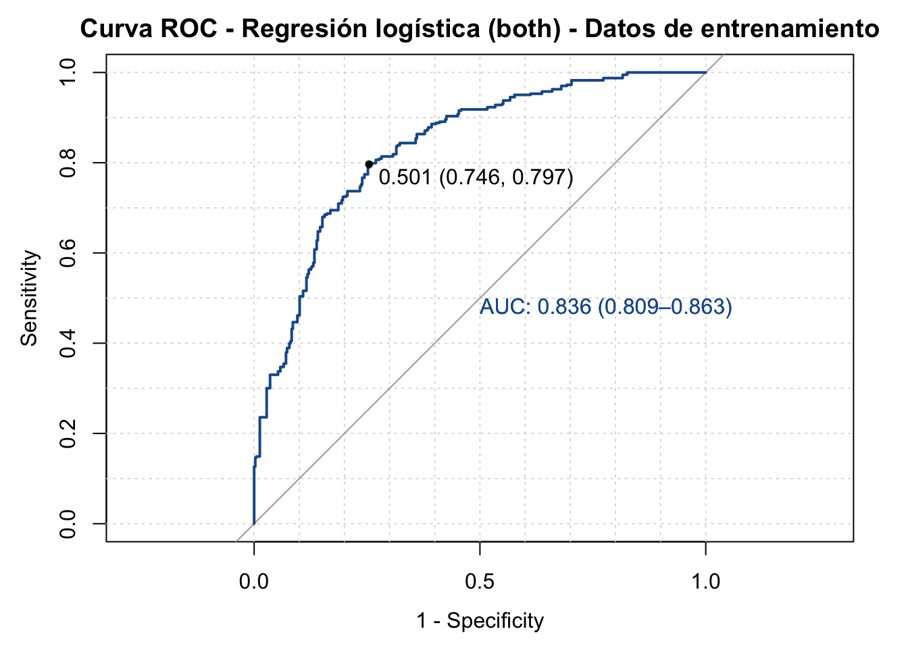
Explicar…
| Métrica | RL balanceado (both) - Train balanceado | RL balanceado (both) - Test |
|---|---|---|
| Accuracy | 0.771 | 0.640 |
| Kappa | 0.542 | 0.244 |
| Sensitivity | 0.797 | 0.633 |
| Specificity | 0.746 | 0.643 |
| Precision | 0.761 | 0.432 |
| F1 | 0.778 | 0.514 |
| Balanced_Accuracy | 0.771 | 0.638 |
| AUC | 0.836 | 0.700 |
| MCC | 0.543 | 0.255 |
Explicar…
5 Regresión logística con datos balanceados - Método SMOTE
Call:
glm(formula = formula_rl, family = binomial, data = data_train_bal_smote)
Coefficients:
Estimate Std. Error z value
(Intercept) -2.004e+00 9.563e-01 -2.096
checking_statusgreater_200 -1.695e+00 3.864e-01 -4.388
checking_statusless_0 2.867e-01 1.912e-01 1.500
checking_statusno_account -1.730e+00 2.048e-01 -8.447
duration 2.510e-02 8.581e-03 2.925
credit_historycritical_other -1.711e+00 3.826e-01 -4.473
credit_historydelay -7.584e-01 4.309e-01 -1.760
credit_historyexisting_paid -5.237e-01 3.588e-01 -1.459
credit_historyno_credit_all_paid 2.766e-01 5.262e-01 0.526
credit_amount 9.677e-05 4.019e-05 2.408
savings500_1000 -1.352e-01 4.310e-01 -0.314
savingsgreater_1000 -1.280e+00 5.614e-01 -2.280
savingsless_100 6.134e-01 2.623e-01 2.339
savingsunknown -1.053e+00 3.298e-01 -3.192
installment_rate 3.692e-01 8.327e-02 4.433
personal_status_sexmale_divorced_separated -2.732e-01 3.560e-01 -0.767
personal_status_sexmale_married -9.098e-01 3.020e-01 -3.012
personal_status_sexmale_single -8.457e-01 1.757e-01 -4.815
other_debtorsguarantor -1.937e+00 5.503e-01 -3.520
other_debtorsnone -4.403e-01 3.974e-01 -1.108
foreign_workeryes 2.028e+00 7.619e-01 2.662
Pr(>|z|)
(Intercept) 0.036092 *
checking_statusgreater_200 1.15e-05 ***
checking_statusless_0 0.133738
checking_statusno_account < 2e-16 ***
duration 0.003443 **
credit_historycritical_other 7.70e-06 ***
credit_historydelay 0.078415 .
credit_historyexisting_paid 0.144433
credit_historyno_credit_all_paid 0.599110
credit_amount 0.016033 *
savings500_1000 0.753856
savingsgreater_1000 0.022627 *
savingsless_100 0.019350 *
savingsunknown 0.001414 **
installment_rate 9.28e-06 ***
personal_status_sexmale_divorced_separated 0.442938
personal_status_sexmale_married 0.002591 **
personal_status_sexmale_single 1.48e-06 ***
other_debtorsguarantor 0.000432 ***
other_debtorsnone 0.267816
foreign_workeryes 0.007762 **
---
Signif. codes: 0 '***' 0.001 '**' 0.01 '*' 0.05 '.' 0.1 ' ' 1
(Dispersion parameter for binomial family taken to be 1)
Null deviance: 1552.6 on 1119 degrees of freedom
Residual deviance: 1070.7 on 1099 degrees of freedom
AIC: 1112.7
Number of Fisher Scoring iterations: 5Explicar…
$Coeficientes
Coeficiente 2.5 % 97.5 %
(Intercept) -2.004 -4.033 -0.224
checking_statusgreater_200 -1.695 -2.480 -0.957
checking_statusless_0 0.287 -0.089 0.662
checking_statusno_account -1.730 -2.137 -1.333
duration 0.025 0.008 0.042
credit_historycritical_other -1.711 -2.485 -0.980
credit_historydelay -0.758 -1.620 0.074
credit_historyexisting_paid -0.524 -1.251 0.161
credit_historyno_credit_all_paid 0.277 -0.740 1.337
credit_amount 0.000 0.000 0.000
savings500_1000 -0.135 -0.997 0.699
savingsgreater_1000 -1.280 -2.449 -0.225
savingsless_100 0.613 0.101 1.131
savingsunknown -1.053 -1.704 -0.410
installment_rate 0.369 0.207 0.534
personal_status_sexmale_divorced_separated -0.273 -0.968 0.431
personal_status_sexmale_married -0.910 -1.509 -0.323
personal_status_sexmale_single -0.846 -1.193 -0.504
other_debtorsguarantor -1.937 -3.041 -0.877
other_debtorsnone -0.440 -1.242 0.325
foreign_workeryes 2.028 0.687 3.743
$Odds_Ratio
Coeficiente 2.5 % 97.5 %
(Intercept) 0.135 0.018 0.799
checking_statusgreater_200 0.184 0.084 0.384
checking_statusless_0 1.332 0.915 1.938
checking_statusno_account 0.177 0.118 0.264
duration 1.025 1.008 1.043
credit_historycritical_other 0.181 0.083 0.375
credit_historydelay 0.468 0.198 1.076
credit_historyexisting_paid 0.592 0.286 1.175
credit_historyno_credit_all_paid 1.319 0.477 3.809
credit_amount 1.000 1.000 1.000
savings500_1000 0.874 0.369 2.012
savingsgreater_1000 0.278 0.086 0.799
savingsless_100 1.847 1.106 3.098
savingsunknown 0.349 0.182 0.664
installment_rate 1.447 1.230 1.706
personal_status_sexmale_divorced_separated 0.761 0.380 1.539
personal_status_sexmale_married 0.403 0.221 0.724
personal_status_sexmale_single 0.429 0.303 0.604
other_debtorsguarantor 0.144 0.048 0.416
other_debtorsnone 0.644 0.289 1.383
foreign_workeryes 7.602 1.988 42.244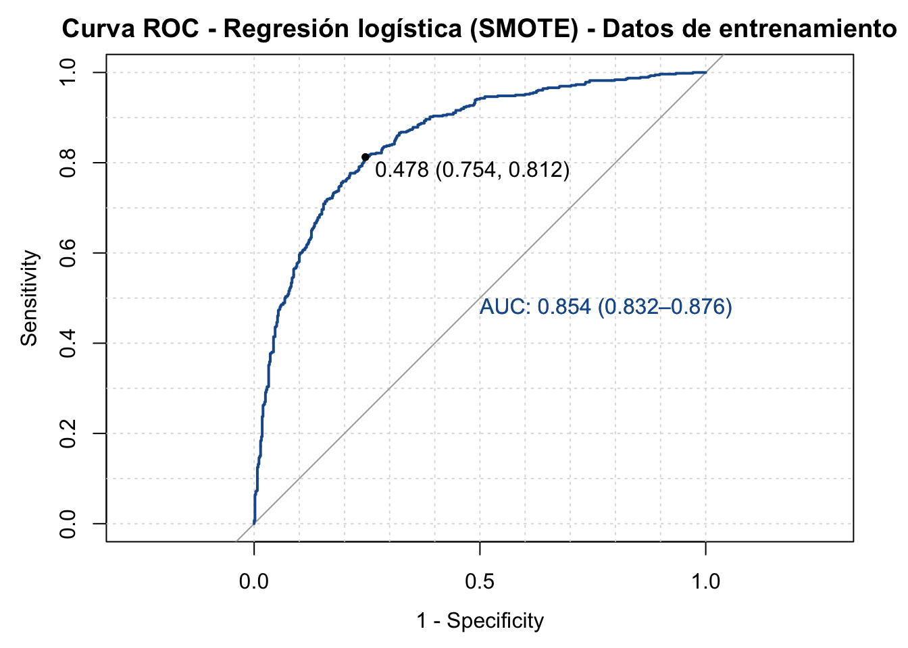
| Métrica | RL balanceado (SMOTE) - Train balanceado | RL balanceado (SMOTE) - Test |
|---|---|---|
| Accuracy | 0.764 | 0.650 |
| Kappa | 0.528 | 0.246 |
| Sensitivity | 0.759 | 0.600 |
| Specificity | 0.768 | 0.671 |
| Precision | 0.769 | 0.439 |
| F1 | 0.764 | 0.507 |
| Balanced_Accuracy | 0.764 | 0.636 |
| AUC | 0.826 | 0.710 |
| MCC | 0.528 | 0.253 |
6 Árbol de decisión
Explicar…
Classification tree:
rpart::rpart(formula = default ~ ., data = data_train, method = "class",
control = rpart.control(cp = 0.001, minsplit = 20, xval = 10))
Variables actually used in tree construction:
[1] age checking_status credit_amount
[4] credit_history duration employment
[7] job other_installment_plans personal_status_sex
[10] property purpose_grouped residence_since
[13] savings
Root node error: 240/800 = 0.3
n= 800
CP nsplit rel error xerror xstd
1 0.0520833 0 1.00000 1.00000 0.054006
2 0.0333333 3 0.84167 0.94583 0.053129
3 0.0208333 5 0.77500 0.92917 0.052843
4 0.0166667 7 0.73333 0.90000 0.052321
5 0.0125000 12 0.65000 0.84167 0.051200
6 0.0104167 13 0.63750 0.82500 0.050860
7 0.0083333 17 0.58750 0.83750 0.051116
8 0.0069444 21 0.55417 0.88750 0.052090
9 0.0055556 24 0.53333 0.90417 0.052397
10 0.0020833 27 0.51667 0.92500 0.052770
11 0.0010417 29 0.51250 0.97083 0.053544
12 0.0010000 33 0.50833 0.97083 0.053544Explicar…
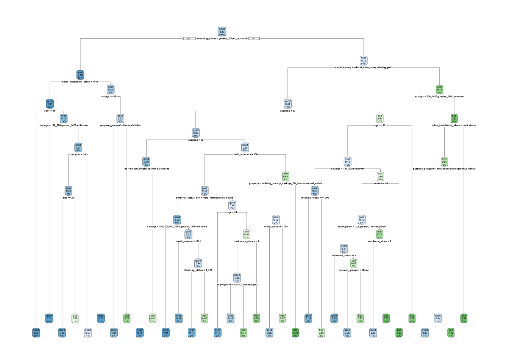
Explicar…
Poda del árbol
[1] 0.01041667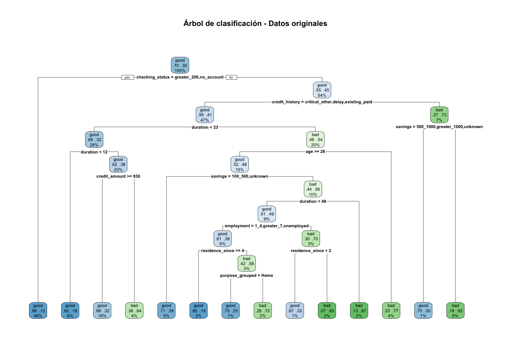
Explicar…
Importancia de variables
| Variable | Importancia | Modelo | Aporte |
|---|---|---|---|
| checking_status | 43.991517 | TREE original | 0.313 |
| duration | 16.990213 | TREE original | 0.121 |
| credit_history | 15.048537 | TREE original | 0.107 |
| savings | 14.891431 | TREE original | 0.106 |
| credit_amount | 12.513264 | TREE original | 0.089 |
| residence_since | 8.990751 | TREE original | 0.064 |
| age | 8.449423 | TREE original | 0.060 |
| employment | 5.635083 | TREE original | 0.040 |
| property | 4.686316 | TREE original | 0.033 |
| purpose_grouped | 3.764081 | TREE original | 0.027 |
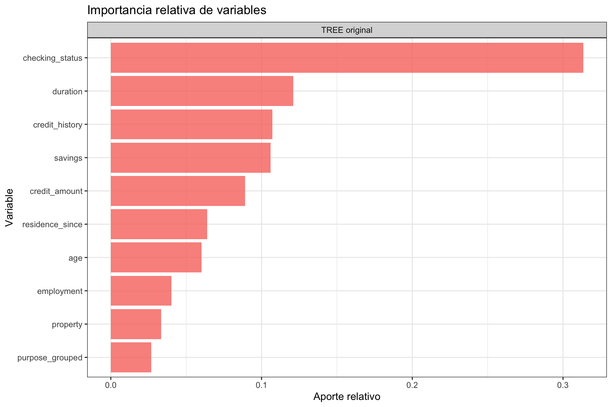
Explicar…
Evaluación de desempeño
| Modelo | Punto_corte_optimo |
|---|---|
| TREE original | 0.31 |
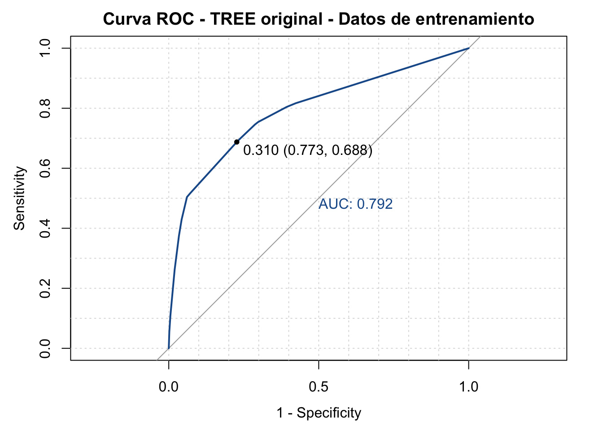
Explicar…
| Métrica | TREE original - Train original | TREE original - Test |
|---|---|---|
| Accuracy | 0.748 | 0.635 |
| Kappa | 0.434 | 0.189 |
| Sensitivity | 0.688 | 0.517 |
| Specificity | 0.773 | 0.686 |
| Precision | 0.565 | 0.413 |
| F1 | 0.620 | 0.459 |
| Balanced_Accuracy | 0.730 | 0.601 |
| AUC | 0.792 | 0.666 |
| MCC | 0.439 | 0.192 |
Explicar…
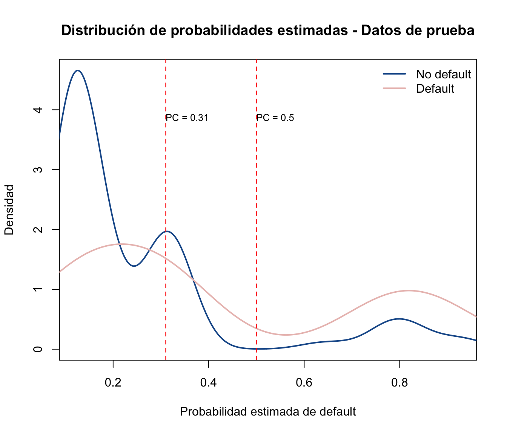
Explicar…
7 Árbol de decisión con datos balanceados - SMOTE
Classification tree:
rpart::rpart(formula = default ~ ., data = data_train_bal_smote,
method = "class", control = rpart.control(cp = 0.001, minsplit = 20,
xval = 10))
Variables actually used in tree construction:
[1] age checking_status credit_amount
[4] credit_history duration employment
[7] existing_credits installment_rate other_debtors
[10] personal_status_sex property purpose_grouped
[13] residence_since savings
Root node error: 560/1120 = 0.5
n= 1120
CP nsplit rel error xerror xstd
1 0.4285714 0 1.00000 1.10000 0.029731
2 0.0446429 1 0.57143 0.57143 0.026997
3 0.0178571 2 0.52679 0.58571 0.027196
4 0.0107143 5 0.47321 0.53036 0.026380
5 0.0098214 8 0.44107 0.52143 0.026237
6 0.0089286 10 0.42143 0.51250 0.026090
7 0.0066964 11 0.41250 0.51429 0.026119
8 0.0064286 15 0.38571 0.52143 0.026237
9 0.0062500 20 0.35357 0.52143 0.026237
10 0.0035714 22 0.34107 0.53393 0.026437
11 0.0029762 23 0.33750 0.52679 0.026323
12 0.0026786 28 0.31786 0.51964 0.026208
13 0.0017857 32 0.30714 0.51786 0.026178
14 0.0010000 33 0.30536 0.52143 0.026237Explicar…
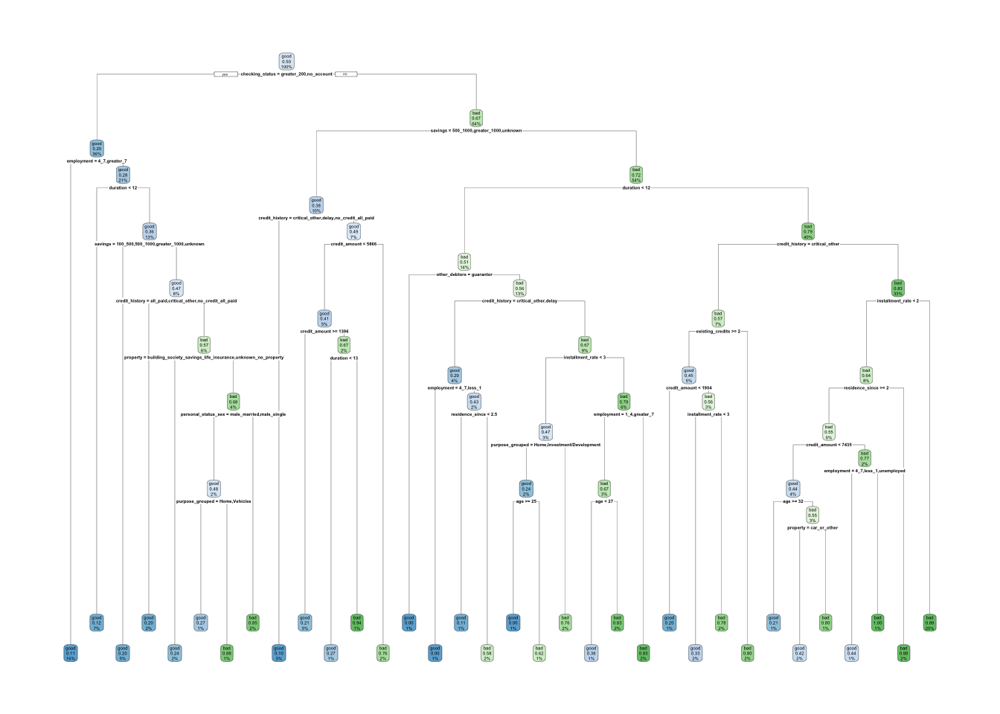
Explicar…
Poda del árbol
[1] 0.008928571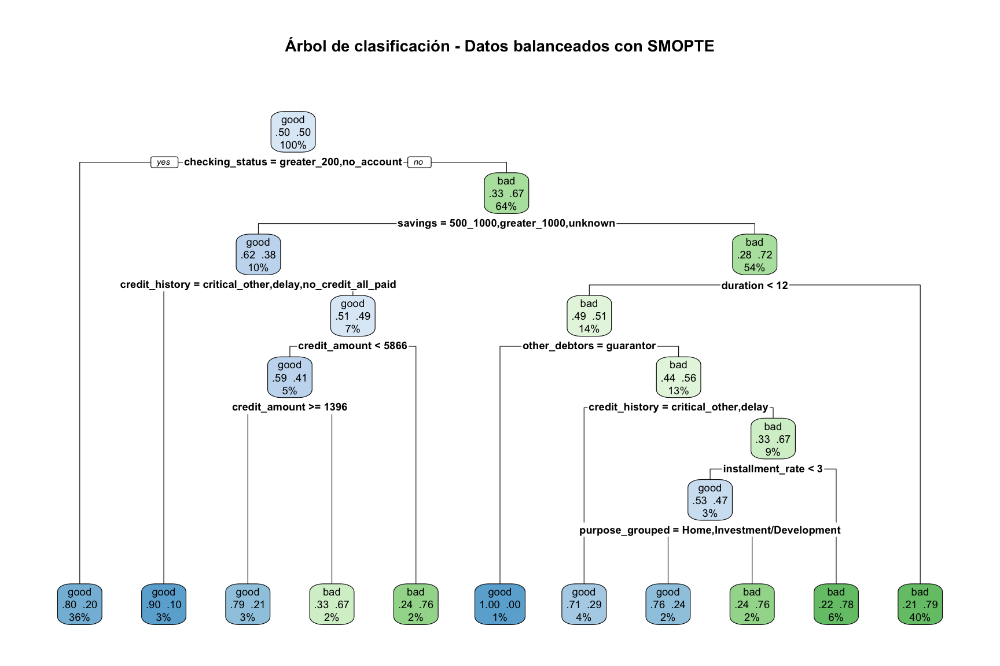
Explicar…
Importancia de variables
| Variable | Importancia | Modelo | Aporte |
|---|---|---|---|
| checking_status | 111.272095 | TREE SMOTE | 0.446 |
| savings | 32.345130 | TREE SMOTE | 0.130 |
| duration | 22.639908 | TREE SMOTE | 0.091 |
| credit_amount | 17.331692 | TREE SMOTE | 0.069 |
| credit_history | 16.598891 | TREE SMOTE | 0.066 |
| existing_credits | 8.298075 | TREE SMOTE | 0.033 |
| other_debtors | 8.067832 | TREE SMOTE | 0.032 |
| purpose_grouped | 7.984902 | TREE SMOTE | 0.032 |
| installment_rate | 7.165404 | TREE SMOTE | 0.029 |
| age | 4.132312 | TREE SMOTE | 0.017 |
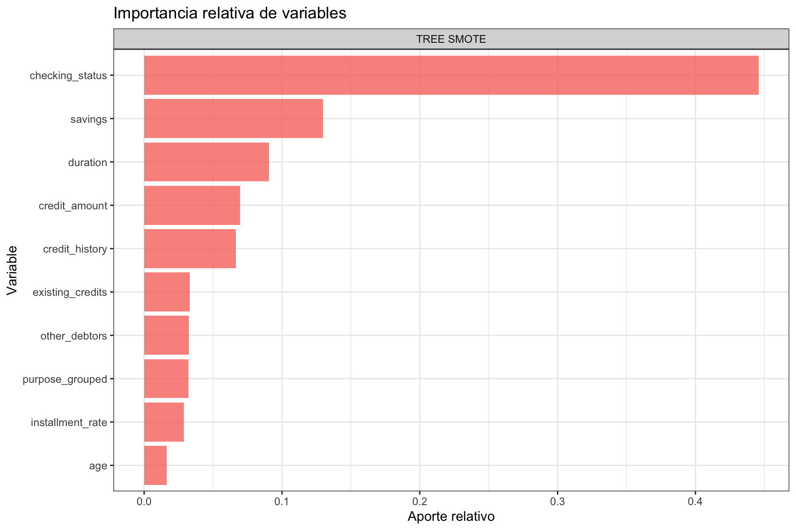
Explicar…
Evaluación de desempeño
| Modelo | Punto_corte_optimo |
|---|---|
| TREE SMOTE | 0.48 |
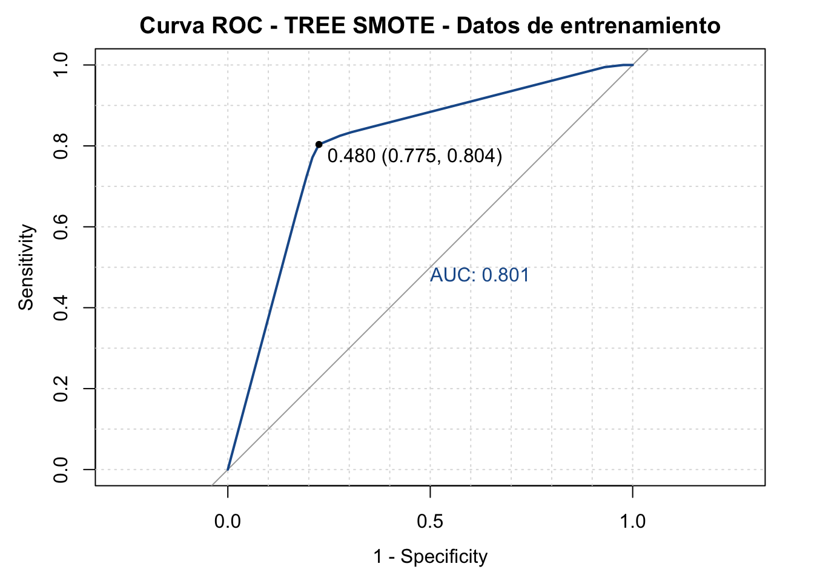
Explicar…
| Métrica | TREE SMOTE - Train SMOTE | TREE SMOTE - Test |
|---|---|---|
| Accuracy | 0.789 | 0.690 |
| Kappa | 0.579 | 0.308 |
| Sensitivity | 0.804 | 0.600 |
| Specificity | 0.775 | 0.729 |
| Precision | 0.781 | 0.486 |
| F1 | 0.792 | 0.537 |
| Balanced_Accuracy | 0.789 | 0.664 |
| AUC | 0.801 | 0.667 |
| MCC | 0.579 | 0.312 |
Explicar…
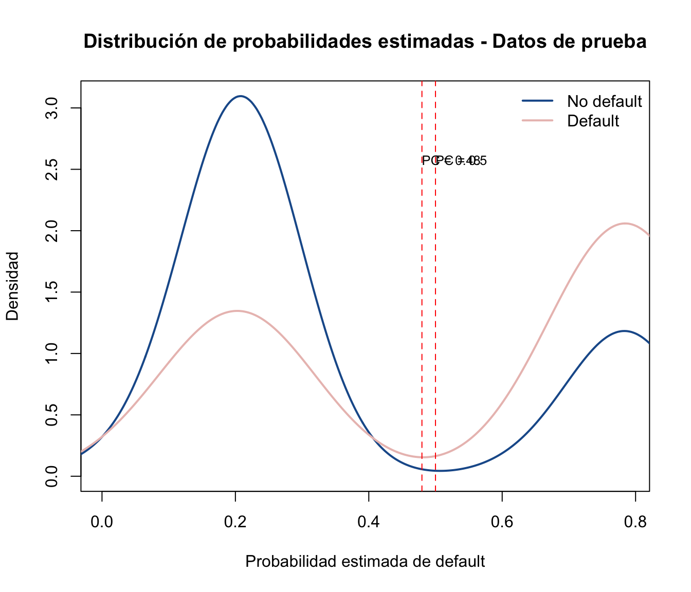
Explicar…
8 Random Forest
Explicar…
Ranger result
Call:
ranger::ranger(default ~ ., data = data_train, probability = TRUE, num.trees = 500, mtry = floor(sqrt(p)), min.node.size = 10, importance = "impurity", seed = 123)
Type: Probability estimation
Number of trees: 500
Sample size: 800
Number of independent variables: 20
Mtry: 4
Target node size: 10
Variable importance mode: impurity
Splitrule: gini
OOB prediction error (Brier s.): 0.1677209 Explicar (ajustar hiperparámetros) y OOB…
| Variable | Importancia | Modelo | Aporte |
|---|---|---|---|
| credit_amount | 34.666968 | RF original | 0.145 |
| checking_status | 33.638202 | RF original | 0.141 |
| duration | 26.149305 | RF original | 0.109 |
| age | 26.047882 | RF original | 0.109 |
| credit_history | 15.429639 | RF original | 0.065 |
| savings | 12.174130 | RF original | 0.051 |
| employment | 10.605571 | RF original | 0.044 |
| installment_rate | 10.313312 | RF original | 0.043 |
| property | 9.311341 | RF original | 0.039 |
| residence_since | 8.409164 | RF original | 0.035 |
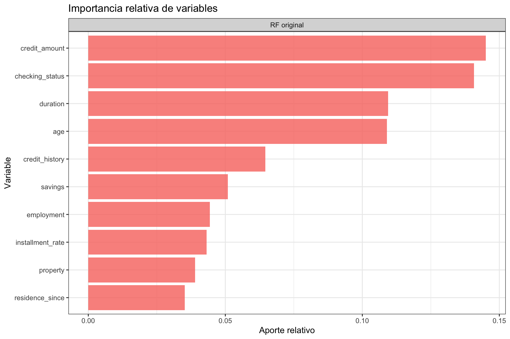
Explicar…
Evaluación de desempeño
| Modelo | Punto_corte_optimo |
|---|---|
| RF original | 0.425 |
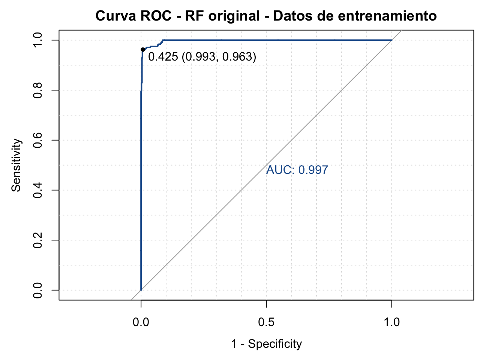
Explicar…
| Métrica | RF original - Train original | RF original - Test |
|---|---|---|
| Accuracy | 0.984 | 0.735 |
| Kappa | 0.961 | 0.360 |
| Sensitivity | 0.963 | 0.533 |
| Specificity | 0.993 | 0.821 |
| Precision | 0.983 | 0.561 |
| F1 | 0.973 | 0.547 |
| Balanced_Accuracy | 0.978 | 0.677 |
| AUC | 0.997 | 0.761 |
| MCC | 0.961 | 0.360 |
Explicar…
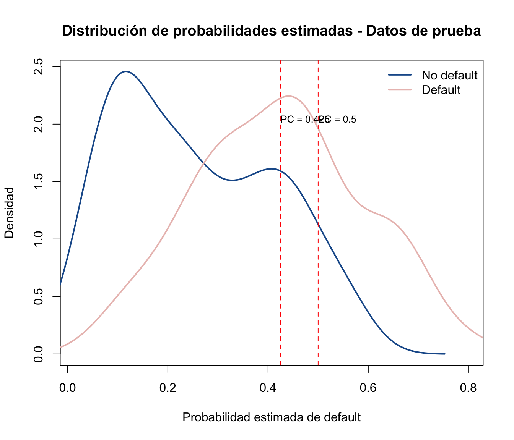
Explicar…
9 Random Forest con datos balanceados - SMOTE
Explicar…
Ranger result
Call:
ranger::ranger(default ~ ., data = data_train_bal_smote, probability = TRUE, num.trees = 500, mtry = floor(sqrt(p)), min.node.size = 10, importance = "impurity", seed = 123)
Type: Probability estimation
Number of trees: 500
Sample size: 1120
Number of independent variables: 20
Mtry: 4
Target node size: 10
Variable importance mode: impurity
Splitrule: gini
OOB prediction error (Brier s.): 0.1305293 Explicar (ajustar hiperparámetros) y OOB…
| Variable | Importancia | Modelo | Aporte |
|---|---|---|---|
| checking_status | 74.54790 | RF SMOTE | 0.168 |
| duration | 46.47755 | RF SMOTE | 0.105 |
| credit_amount | 43.60490 | RF SMOTE | 0.099 |
| age | 41.92516 | RF SMOTE | 0.095 |
| installment_rate | 33.45987 | RF SMOTE | 0.076 |
| savings | 28.02789 | RF SMOTE | 0.063 |
| credit_history | 25.24346 | RF SMOTE | 0.057 |
| residence_since | 22.81469 | RF SMOTE | 0.052 |
| existing_credits | 18.74312 | RF SMOTE | 0.042 |
| employment | 16.52016 | RF SMOTE | 0.037 |
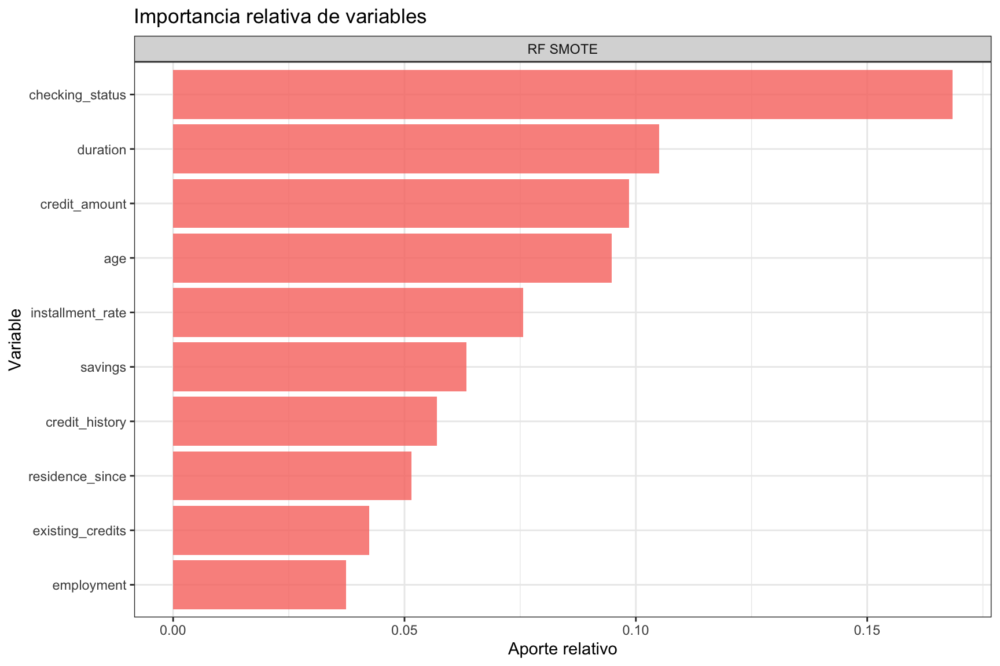
Explicar…
Evaluación de desempeño
| Modelo | Punto_corte_optimo |
|---|---|
| RF SMOTE | 0.508 |
Call:
roc.default(response = data_train_bal_smote$default, predictor = prob_smote_train, levels = c("good", "bad"), direction = "<", quiet = TRUE)
Data: prob_smote_train in 560 controls (data_train_bal_smote$default good) < 560 cases (data_train_bal_smote$default bad).
Area under the curve: 0.9992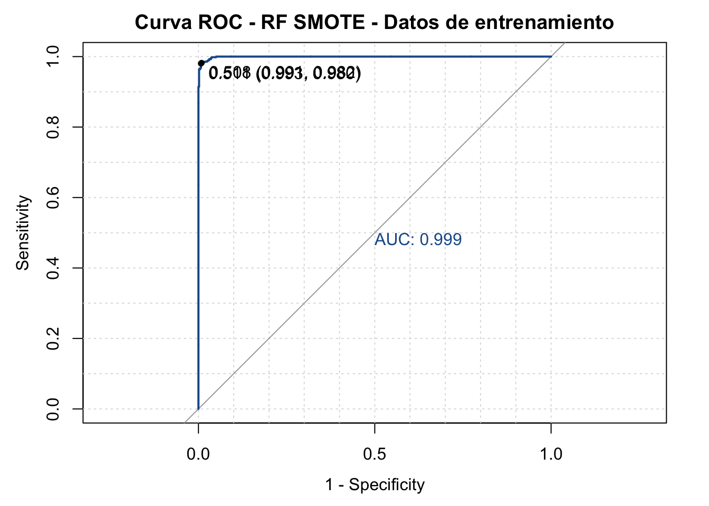
Explicar…
| Métrica | RF SMOTE - Train SMOTE | RF SMOTE - Test |
|---|---|---|
| Accuracy | 0.987 | 0.715 |
| Kappa | 0.973 | 0.269 |
| Sensitivity | 0.982 | 0.400 |
| Specificity | 0.991 | 0.850 |
| Precision | 0.991 | 0.533 |
| F1 | 0.987 | 0.457 |
| Balanced_Accuracy | 0.987 | 0.625 |
| AUC | 0.999 | 0.738 |
| MCC | 0.973 | 0.274 |
Explicar…
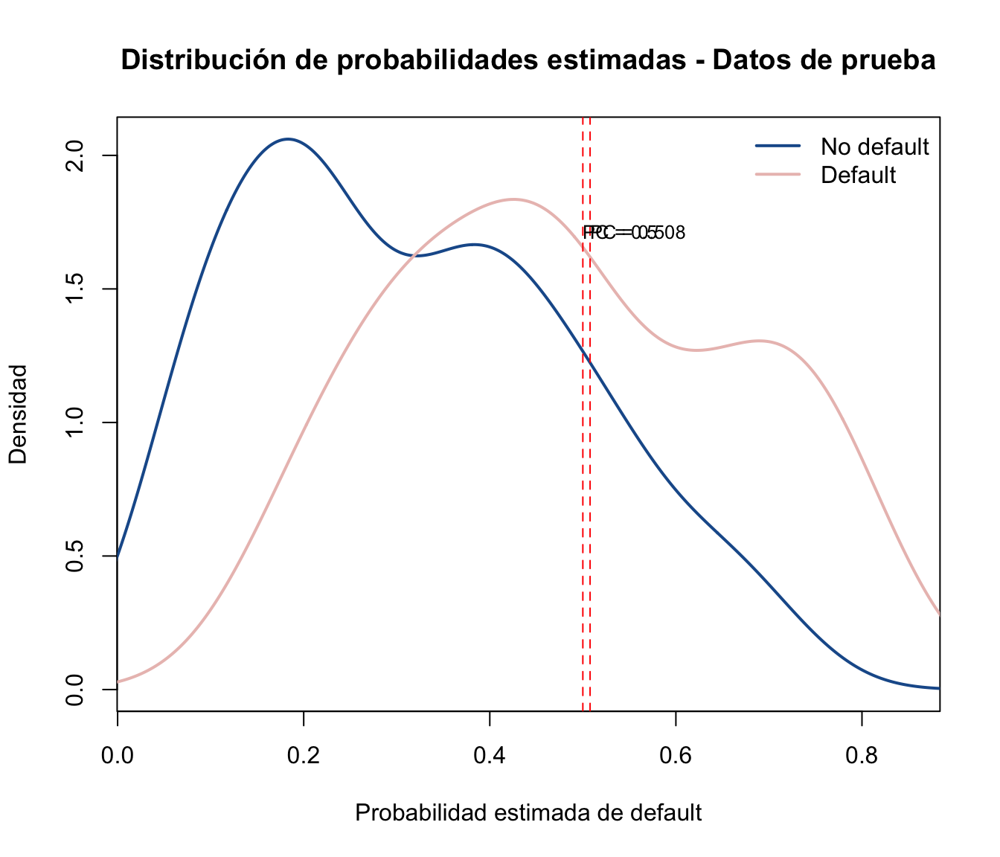
Explicar…